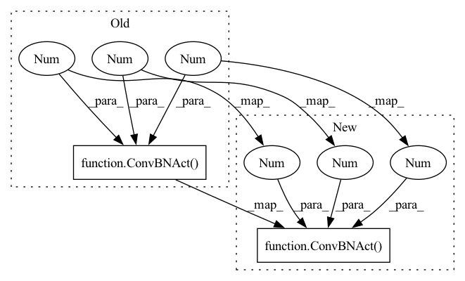

Pattern ID :29155

Before Change
if config.use_se:
block.append(SEUnit(inter_channel))
block.append(ConvBNAct(inter_channel, config.out_ch, 1, 1, 1, config.norm_layer, nn.Identity))
self.block = nn.Sequential(*block)
self.use_skip_connection = config.stride == 1 and config.in_ch == config.out_ch
self.stochastic_path = StochasticDepth(sd_prob, "row")
After Change
block.append(("linear_bottleneck", ConvBNAct(config.in_ch, inter_channel, 1, 1, 1, config.norm_layer, config.act)))
block.append(("depth_wise", ConvBNAct(inter_channel, inter_channel, config.kernel, config.stride, inter_channel, config.norm_layer, config.act)))
block.append(("se", SEUnit(inter_channel, 4 * config.expand_ratio)))
block.append(("point_wise", ConvBNAct(inter_channel, config.out_ch, 1, 1, 1, config.norm_layer, nn.Identity)))
self.block = nn.Sequential(OrderedDict(block))
self.use_skip_connection = config.stride == 1 and config.in_ch == config.out_ch
In pattern: SUPERPATTERN
Frequency: 3
Non-data size: 2
Instances
Fragment ID: 85824029
Project Name: hankyul2/efficientnetv2-pytorch
Commit Name: e07d26d87af78820bbc1759857b72f583ce0f1cd
Time: 2021-11-12
Author: consistant1y@ajou.ac.kr
File Name: src/efficientnet_v2.py
M Class Name: MBConv
N Class Name: MBConv
M Method Name: __init__(3)
N Method Name: __init__(3)
M Parent Class: nn.Module
N Parent Class: nn.Module
M File Name: src/efficientnet_v2.py
N File Name: src/efficientnet_v2.py
M Start Line: 68
M End Line: 81
N Start Line: 69
N End Line: 83
'>
Before Change
self.stochastic_depth = stochastic_depth
self.features = nn.Sequential(
ConvBNAct(3, self.in_channel, 3, 2, 1, self.norm_layer, self.act),
*self.make_stages(layer_infos, block),
ConvBNAct(self.last_channels, self.out_channels, 1, 1, 1, self.norm_layer, self.act)
)
After Change
self.num_block = sum(stage.num_layers for stage in layer_infos)
self.stochastic_depth = stochastic_depth
self.stem = ConvBNAct(3, self.in_channel, 3, 2, 1, self.norm_layer, self.act)
self.blocks = nn.Sequential(*self.make_stages(layer_infos, block))
self.head = ConvBNAct(self.final_stage_channel, last_channel, 1, 1, 1, self.norm_layer, self.act)
self.avg_pool = nn.AdaptiveAvgPool2d((1, 1))
self.dropout = nn.Dropout(p=dropout)
'>
Fragment ID: 85824009
Project Name: hankyul2/efficientnetv2-pytorch
Commit Name: e07d26d87af78820bbc1759857b72f583ce0f1cd
Time: 2021-11-12
Author: consistant1y@ajou.ac.kr
File Name: src/efficientnet_v2.py
M Class Name: EfficientNetV2
N Class Name: EfficientNetV2
M Method Name: __init__(8)
N Method Name: __init__(7)
M Parent Class: nn.Module
N Parent Class: nn.Module
M File Name: src/efficientnet_v2.py
N File Name: src/efficientnet_v2.py
M Start Line: 96
M End Line: 111
N Start Line: 95
N End Line: 111
'>
Before Change
self.stem = ConvBNAct(3, self.in_channel, 3, 2, 1, self.norm_layer, self.act)
self.blocks = nn.Sequential(*self.make_stages(layer_infos, block))
self.head = ConvBNAct(self.final_stage_channel, out_channels, 1, 1, 1, self.norm_layer, self.act)
self.avg_pool = nn.AdaptiveAvgPool2d((1, 1))
self.dropout = nn.Dropout(p=dropout)
def make_stages(self, layer_infos, block):
After Change
self.stem = ConvBNAct(3, self.in_channel, 3, 2, 1, self.norm_layer, self.act)
self.blocks = nn.Sequential(*self.make_stages(layer_infos, block))
self.head = nn.Sequential(OrderedDict([
("bottleneck", ConvBNAct(self.final_stage_channel, out_channels, 1, 1, 1, self.norm_layer, self.act)),
("avgpool", nn.AdaptiveAvgPool2d((1, 1))),
("flatten", nn.Flatten()),
("dropout", nn.Dropout(p=dropout)),
'>
Fragment ID: 85824021
Project Name: hankyul2/efficientnetv2-pytorch
Commit Name: afce628b736493ac99cd3a4b122b344b2f297edf
Time: 2021-11-12
Author: consistant1y@ajou.ac.kr
File Name: src/efficientnet_v2.py
M Class Name: EfficientNetV2
N Class Name: EfficientNetV2
M Method Name: __init__(9)
N Method Name: __init__(8)
M Parent Class: nn.Module
N Parent Class: nn.Module
M File Name: src/efficientnet_v2.py
N File Name: src/efficientnet_v2.py
M Start Line: 104
M End Line: 119
N Start Line: 101
N End Line: 123